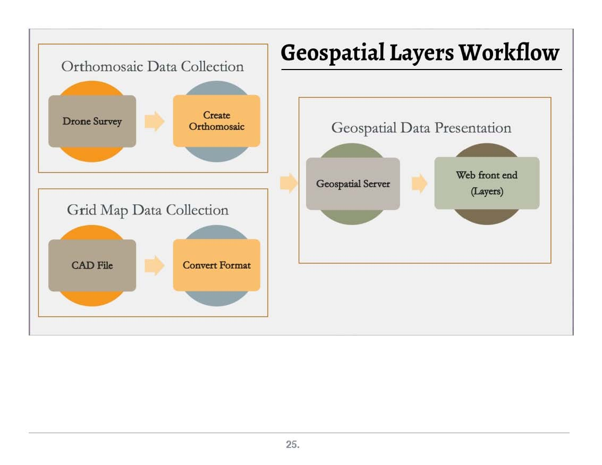

CitySmart - WorldWise
Kodiak, Alaska - Fei Tian Academy of the Arts , Middletown, NY USA - A World Bridge™ Project
Collaborative Model for Sustainable Communities in NASA World Wind - A World Bridge - Trillium Learning
CitySmart - WorldWise is a collaborative project between A World Bridge students in Kodiak, Alaska and the Fei Tian Academy of the Arts in Middletown, New York, USA.
Goal
This project is developing a web app that visualizes the entire community infrastructure. Power, water, sewer, communication and roads are mapped including databased information per item. Significant Operations & Maintenance documentation was obtained from multiple environments, including Kodiak Electrical Association's 100% renewable energy systems, and the FTAA Sustainable Campus, to share and help other communities design and develop their own sustainable environments. Click HERE to run the application
Focus is on smarter community themes, helping to design and build sharable models for:
- Renewable Energy - design, cost, material, as-built construction, operations and maintenance data, along with lessons learned.
- Water Purification and Treatment – monitoring and research techniques for assuring a community has safe water
- Food/Agricultural Systems Development – accelerated greenhouse farming techniques
- Resource Mapping and Inspection – full visual coverage for a community, including georeferenced maps, structure inspection, environment evaluation, all student-generated data.
- Community resources mapped into WebWorldWind geospatial layers include energy, water, food, transportation, health & medical, emergency response, search & rescue, educational, etc.
Evaluation Video (Click this link or the picture below to play the video. The video will expand to the window size, and play at a lower resolution but you may downoad it at high 1080p resolution)

From the “Geo for All” initiative: "The world is shrinking. We are actually getting larger in it, and the cities have to absorb today’s exponential increase in population, including the continual movement of rural life to urban living. World population since the ‘second industrial’ revolution after 1850s has grown from 1 billion to almost 8 billion today. In 1950 at a mere 2.5 billion, we were almost evenly distributed between rural and urban. Today, in the developed world, approximately 80% of the population lives in cities.
This is creating very difficult conditions for sustainability, for managing basic city services and for ensuring the quality of urban life for everyone. We must learn to apply our limited resources more effectively and more efficiently. To most wisely achieve this goal, we need a more collective approach to problem-solving. Many, if not most of the challenges facing the cities of today are quite similar in nature, if not identical, from infrastructure management to essential public services. Why must each city solve these problems alone? If the cities of the world were to share solutions with each other, they could each focus on different parts of the problem and thereby only bear the burden for a small fraction of the load. And by working together we may come to better appreciate what we share in common as well as experience the joy being able to help each other.”
Educational Outreach
This CitySmart-WorldWise application is designed to provide community administrators the information necessary to understand the current status of resources and condition of their communities.The ability to quickly review the status of power generation and distribution, water quality and treatment levels, food production and distribution, and many other systems allows these administrators to plan future strategies and action to adjust to new, and environmental change conditions. Additionally, students are generating and acquiring these data, which creates understanding and education outreach for the entire community, and promotes collaboration between the communities’ systems and culture.
This application enables easy-to-use access pertinent information for each community resource system, and to navigate in simple yet highly visual geospatial methods, and is available for all community and educational institutions worldwide.
The CitySmart-WorldWise application is a completely open source application based on NASA-ESA WebWorldWind. Programming code utilized a variety of tools and applications, including Javascript, HTML5, CSS, Python, and server-side programming - all available on the GitHub site.
CitySmart - WorldWise Data Workflow
The data workflow for this project is outlined in the graphics below. For the full iexplanation, click this link
.jpg "This image is a placeholder. Drag a new media file here to replace it.")
Evaluation Video Documentation - Slides, Screenshots and Script - A Full Tutorial
_Page_01.jpg "This image is a placeholder. Drag a new media file here to replace it.")
The Evaluation video above may also be viewed as screenshots from the main slides, along with the script from the narration. This slide set provides a full tutorial of the many features, data and documentation available in the CitySmart - WorldWise application, and demonstrates many details of the level of information, sophisticaton of the application, and O&M data available to help manage a community’s resources.
Server-Side and Technical Documentation/Description
Click HERE to view a separate page on the WHS Earth Viewer technical documentation.

Meet the Team
Mentor: Professor Ron Fortunato
A World Bridge collaborative team members Kiae Shin, Daniel Johnson from Kodiak, Alaska, and Trueman Wu, Julia L. Zhu, Minghui Zhang, Huaqi Zhang,, and supporting mentor Mr. Anson Zhao from Fei Tian Academy of the Arts, Middletown, New York, USA.